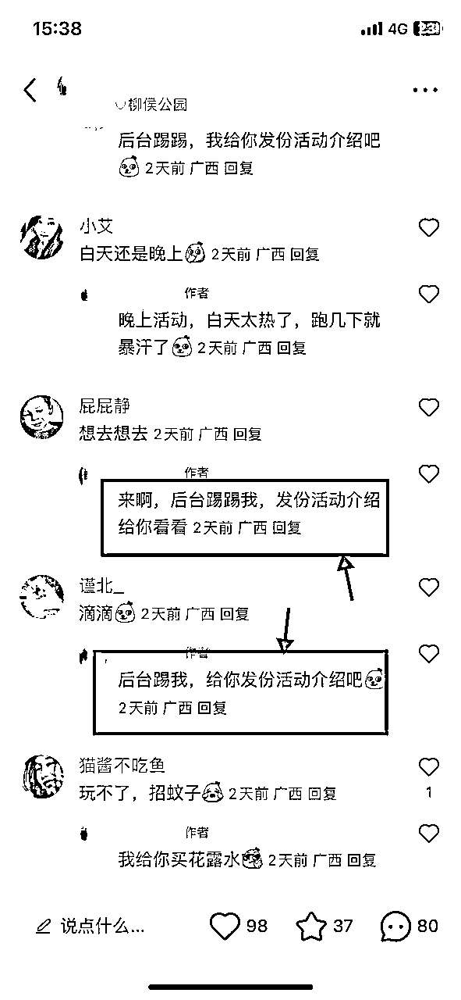
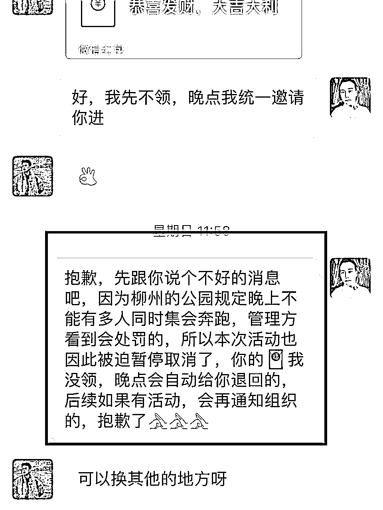

来源：https://nivut760ftk.feishu.cn/docx/Mqwud1AH9o7zMxxa8J6czEwtnEh
大家好，我叫艾小飞，擅长小红书引流
今天分享的主题也是跟小红书流量和引流有关的
不知道圈友们有没有这样的烦恼，想在小红书上做项目引流，但却不知道该如何入手？
想找个老师来带自己学小红书，但被好几千的学费给劝退了！
在网上找了各种小红书免费的资料包，但已经是过时的技巧了！
烦，怎么办？
如果你有以上的这些苦恼，可以推荐你阅读这篇文章，你想到的这些问题，我在文章里都会给你合适的解答，让你一次看个够！
我创作这篇文章，花了有三天的时间，把这篇原文从18000多字，删减到最后的10020字，把我玩小红书的技巧、思路、教程、注意事项的所有精华，都浓缩集中在了这篇作品上
希望你可以在一个安静的环境下，花30分钟静下心来阅读观看
为了照顾你们舒适的阅读感，我也会用第一人称的视角，以故事案例的形式，来分享我做这个项目的整个路程
好啦，也不多废话了，我们开始吧
给你们先看个目录表
其实早在两天前，我在圈友群里看到了这条消息

意思是说，最近这个活动在小红书上比较火的，火到都收39元一个人了，很有钱途的啊！
当时我的第一反应是：
这是什么游戏？
有多火？
能赚多少？
怎么做？
带着这种满脸问号，马上打开小红书去搜索：猫捉老鼠
什么是猫捉老鼠游戏？
简单一句话总结就是：共享位置，成年人的躲猫猫
在20人里面，随机抽5位扮演“猫”，其余扮演“老鼠”，活动开始后，“老鼠”有10分钟的躲藏时间
10分钟后“猫”开始【抓鼠行动】，在规定时间内“猫”抓完所有“老鼠”即为胜利，相反则挑战失败
猫捉老鼠游戏的优点是
1、门槛低，会跑，喜欢玩的就能参加
2、不限年龄、不限职业、不限性别
3、户外运动，暴汗、减压、减脂
4、费用低，奖励多，物料多
5、能认识更多新朋友，更能增进和对象的感情
搜完后发现这个热度还挺高的啊，而且也是最近的半个月才火起来的，本能的反应，预测这东西肯定会再次爆起来
于是我捕捉到了这个信息后，马上去搜索【柳州猫捉老鼠】，看看我们同城有没有人在做
搜了一圈，发现居然没人在做！！
激动得马上跟圈友反馈
没人在做，就意味着市场有需求，但却没人能提供这个服务！这不就是妥妥的蓝海市场吗！
靠着这个短期项目，应该能赚点零花钱，也想挑战下，看看能不能借着这个热度，一天内快速的把账号给做起来，如果成了，那就有点意思了
在这里先跟大家说的是，我并不是一开始，就马上去实操引流的，而是先发现有需求后，我才这么去做的
当时我都看到像一二线的城市，很多人都想去报名参加活动，但我发现在我们柳州的同城。却没有人去做这块，确定了是肉多狼少的市场后，我才会决定去实操执行的
同样的，你们也可先看看自己的所在城市，有没有人在做这个项目，给你感觉他做的效果怎么样，如果是你入场的话，能不能去超越他，如果你觉得没问题，那我们就继续往下看
在起号之前，你需要准备一台手机和一张电话卡，用来注册一个新的小红书帐号
如果你已经有了小红书帐号，但这个号价值不是很大，你可以注销掉，用同样的号码，再去注册一个新的帐号，就可以马上使用了
注册帐号的时候，要注意一个细节点，你不要登陆家里或公司的WiFi
为什么呢？
因为我们玩这种项目，是奔着引流去做的，在小红书上玩引流，没有哪个帐号是100%安全的，被封号也是家常便饭的事了
你账号不小心的登陆在这个WiFi后，如果被封号了，其他的账号都会被受到牵连
比如登陆同一个wifi下的其他账号，突然的被限流，突然的被提示违规，就是很莫名其妙的就没流量了。目前这个问题无解，只有避免这种情况发生
所以为了账号稳定，千万不能去登陆wifi，这是一个不起眼却很重要的细节知识点
好了，当你注册好帐号后，先不要去做任何的动作，不要去修改资料，啥都不要做
然后就用这个新号开始去收集素材，制作素材，并发布笔记了
可能你会问，收集素材来做什么呢？
其实一个好的素材，就能决定你能引流多少人进来，特别是首图的封面，一张好的封面，能提升90%的点击率。会直接影响到笔记流量
怎么收集呢？
打开小红书在搜索栏打上《猫捉老鼠》的关键词
会出现很多像这样的页面
像这么多的图片，我要依据什么核心点来选呢？
很简单的，只要他的封面足够吸引我，让我看了他的图后，都有想去报名的冲动，这种图就要截图保存下来
然后找20张这样能吸引我的图后，从中选出一张来作为封面图，然后去进行1:1的二次创作
选好了其中一张图片后作为模仿对象后
接下来就要1:1的制作跟他差不多的封面了！
我是怎么制作这种封面的呢
来咯，教程来咯，如果旁边有多余手机，可以跟着我一起操作吧
我的第一步，是打开美图秀秀APP，进入美化图片后，点击右上角的制作壁纸，选择白色的底图，点击下一步
然后点击下面的编辑这，裁剪成3:4的尺寸比例
可能你会问，为什么要裁剪成3:4的比例呢
因为小红书的展示页面不像抖音那样是9:16尺寸的，而小红书是3:4尺寸
如果你弄成其他的尺寸比例，会影响到整体美观，从而影响到你的点击率和流量
OK，制作好底图后，我在回头看要模仿的这张图
他是下面一张实拍图，上面是卡通图的结构的对吧
那我当时没有实拍图，该怎么办呢？
于是我回到小红书上去搜索“猫捉老鼠”的关键词，看看有没有类似像他这样的图片，“偷”一张过来“借”用下 [狗头]
找了很久，于是我就找到了像这样的一张图
其他多出来的部分我都不想要，只要最下面的那张图，然后我就用手机相册，把它做了个简单的裁剪
考虑到不想被平台抓到我是搬运的，于是我就把这张图片，弄成镜像，把它反了过来
这样的一张照片，就被我简单的处理过了，然后就开始拿着这张照片，放到我刚刚已经制作好的底图上
怎么放呢，很简单的，来跟着我步骤走
返回到刚刚制作好底图的美图秀秀APP上，在最下方的功能栏那，找到这个“贴纸”功能

点击自定义后，添加刚刚的图片，它会自动给你抠图的，你就取消掉，点确定就完成了
这是完成后的图片，然后双指往两个相反的方向拉开就会放大，相反则缩小
这是我放好之后的位置，你们参考下
制作好了下面这张图后，像画圈圈的这块地方，该怎么制作呢？
来，我们继续
我又回到了小红书上，换个关键词来搜索，“汤姆和杰瑞”，然后找到了像这样的两张图片
按照刚刚找贴纸功能的那个方法，把图片给放上去，摆正好位置后，就做成像这样的，你们参考下
是不是有点像了对吧
OK，那画圈中的这个“爱心”表情在哪弄的
找到这个贴纸功能
然后在搜索框那，搜索“爱心”两个字，就会出现一排的爱心，你任选一个好看的放上去就行了
是不是很简单，来给你们看下做出来的图是什么样的
是不是感觉差不多了对吧
OK，那接下来就是文字的部分了
文字在哪制作呢
在最下方的功能栏，向左滑会看到一个“文字”栏，选择它后输入“共享位置/猫捉老鼠”的文案
然后点击颜色栏，选一个跟原图片相似的颜色，点击字体，选个方正的字体，这样会显得更好看一点
这样就操作完成啦，给你们看看做成之后的样子
然后就到了中间这个文案的环节了
这个文案，是直接决定了，别人会不会通过你的关键词，被吸引进来看
所以是比较重要的
当时我在想，要写个什么文案比较好呢？
要不像他这样：把“广州”改成“柳州”，写成《柳州站开玩》吧
我觉得既然模仿人家都到这一步了，再这么不要脸的模仿，如果被他发现给举报了，号被封了，真就亏了哈哈
所以我在这个句话上，修改了下
写成：柳州人集合
我也不确定这个文案，会不会有人来看，反正当做是测试嘛，不行再改嘛
我做出来的图是这样的，你们看下
然后再给你们对比下原图，你们看下
看得出来有什么差别吗？基本上差别很小对不对，这就是通过模仿进行的二次创作
制作这种封面有什么好处呢？
这样的好处是起号快，因为别人的封面是经过市场验证过的，且还有流量热度，而小红书上的爆款底层逻辑都是重复的
也就是说，我模仿了别人已经验证过的爆款封面，那我这篇笔记大概率也会有流量进来，这就是最大的一个好处
同时你也不会费那么多的精力，绞尽脑汁的去想怎么制作封面了，因为创作是有灵感瓶颈的，有参照物在，做起来会更加的轻松一些，也能节省更多的时间和精力
做好了封面后，那我们下一步就是要制作内页了
什么是内页呢？
就是封面的第二张图之后的，都算是内页
比如像这样
怎么去找这种内页？
同样的，也是回到小红书搜索栏，搜索“猫捉老鼠”
然后在排名前20的笔记中，把认为能吸引到我图片的，都截图收集了下来，这种只能靠自己主观审美去判断的
给你们看看，我选的三张图片
因为是第一篇笔记，我也不确定这篇笔记能不能爆，当时我做笔记的主要目的，是为了做测试需求的。所以选得比较随意一点，只选了三张内页图
说完了内页图，现在来说说标题
我起标题有一个核心的底层逻辑，就是在我这篇主题内容中，提炼出2-3个核心关键词，然后再借用爆款标题模板，给套进去，这样就成为了一个万能的标题了
我给你们举个例子
像我发布这篇的主题内容，提炼出来的核心关键词有，【柳州】和【猫捉老鼠】
然后我再到小红书上去搜索，“爆款标题”的模板
再用这两个关键词给套进去就行了
给你们参考下我当时起的一个标题
你们看看这里面是不是包含了，有我两个核心的关键词，【柳州】和【猫捉老鼠】
标题它的作用，是让用户搜索到这个关键词后，你的笔记就会排在前面，得到更多的曝光量
同时也配合封面，吸引别人点进你这篇笔记观看，从而提升更高的浏览量，这就是标题的作用
说完了标题，再来说说正文吧
正文就是文案，这个环节也是非常重要的，它能给用户传达你这篇内容想要表达什么意思
当时我是不懂怎么去写这种文案的，于是我还是用像做爆款封面的那个玩法
在小红书上搜索“猫捉老鼠”的关键词，收集有大概20篇笔记的正文，复制下来重新整合修改后，就写出了像这样的正文，你们参考下
正文的前半段，主要是展示这个活动的热度，活动有多火，都是什么人玩，为什么喜欢玩，有哪些好处等，它的作用是通过文字来激发用户对这方面的兴趣
后半段再说明这个游戏的规则、时间、地点、费用、报名方式等
这样前后的铺垫和埋下的钩子，就能制作出一篇能吸引人的正文了
正文简单弄好了后，接下来就剩最后一个环节，那就是话题了
话题它的作用，是让系统快速的识别到，你这篇笔记主要讲的是什么方向的内容
从而平台才会根据话题类别，给你推送之前有浏览过这类话题的人群，来看你的这篇笔记
添加话题的好处是，能快速的锁定精准人群，突破账号冷启动期
当时我在想，话题要写什么好呢？
为了抓紧时间赶紧去测试，当时看到原文用的话题是这样的
然后我在他的基础上，做了一些修改，成了这样的
你也看到了吧，这篇每个话题里，都加上了核心关键词【柳州】
这么做的目的，就是想要快速锁定同城的人，吸引更精准的用户来看
而不是写“猫捉老鼠”这样泛流量的话题，那样就会是全国各地的人来看，不是我的客户人群，对我这篇起不到什么关键作用
别人只要搜“柳州猫捉老鼠”，在搜索前排的，大概率是会看到我这篇的，搜索权重也会比同篇笔记的人高，这就是话题的重要性
OK，当操作完成了5个基础步骤后，接下来就要到发布笔记的环节了
发布笔记之前，我有一个细节想跟你们说下，因为当时这个帐号是刚注册的嘛，名字和头像都是没有的
发布前我就换了个真人头像和自己的名字，这样用户看了后，会对你有点基础信任
大概过了5分钟后吧，就开始发布这一篇笔记了。给你们看一下
当时发布笔记浏览量还是很低的，大概是不到100吧，我都怀疑是不是我的封面出问题了
又过了大概有30分钟，就有人开始来评论说：“怎么玩”“DD”“怎么报名”之类的留言
当时真的好开心，说明在我们柳州同城是有这方面需求和人群的
我在想要不再等等吧，看看待会数据还会跑得怎么样
大概过了一个小时这样吧，就陆陆续续的有人来评论了，都是想来报名参加的！
既然都有人来咨询了，我觉得这个时候可以尝试去导流了
当时我还犹豫的思考了下
是先把他们引流到微信上，免费建群聊天后再转化成交呢？
还是先在小红书上筛选一遍，转化成功后再引流到微信上成交呢？
这是非常小的细节点，也是很多人经常搞反的细节点。一步错，就真的步步错了！
嗯...我当时是这样想的，也给你们分享下
因为我之前在小红书上也玩过免费服务引流的，比如免费诊断账号，免费咨询问题，免费进群交友，免费领取资料
引流效果是很好的，效率也很高！一下子就把我的微信号都给加成频繁提示了！
但转化率是非常低的，你一说到收费，他二话不说就举报你，而且你发个朋友圈宣传点什么东西，还被恶意举报到封禁你的朋友圈....
一联想到这种情况，终究还是怕了怕了....
所以打算尝试，先在小红书上做初步筛选，确定能接受9.9元报名费用后，我再引到微信上，要不，真不敢伺候白嫖党，怕了怕了
确定了这个基本的思路后，就开始做引流动作了
当时我引流的方式是，先建立个小红书群聊，复制群聊的链接到评论区，引导他们到小红书群聊里来，然后再用小号进行倒流到微信上
用这个方法导流速度很快，一下子就吸引50多人进群了
很开心，但也让我苦恼的是，我在群里引导他们花9.9元来加我微信，就没人乐意了
啊哈！你们变了！果然说到钱，个个都不爱了，真是现实啊你们
我在想，那行啊，既然你们都想来白嫖我，那老子也不伺候你们了，群我解散了，爱咋咋地
于是我取消了群聊引流的方法，就换成了私信筛选法，通过评论区放个钩子，引导他们主动的找我私信，看看这样的效果会怎么样
说到钩子，这个肯定是很重要的啦，没有钩子，人家为什么会主动的来找你对吧
为了让他们意识到主动的好处，那只能拿出我祖传十八代的秘诀了
什么秘诀呢哈哈
我又搜回“猫捉老鼠”这个关键词，慢慢去挖掘用户的痛点是什么！
然后在评论区看到用户都在抱怨一个点，那就是不清楚活动是怎么玩的！
哎嘿！不清楚活动怎么玩是吧，那行，那我就去做一份活动介绍给你们，拿这个来引你们上钩，看看有没有人好这口的
当有人在评论区留言时，我就这样回复

没过5分钟，果然，上钩了！
当时的那个激动啊！！！手都是抖的，回都回不完啊！！评论越来越多，私信也越来越多！麻了麻了！这事感觉也要成了成了
劝你别急，深呼吸后，冷静的思考下，我要用什么样的话术去筛选他们呢
想了很久，就临时编了一套不怎么好的话术，在这里给你们放个案例看看
当有客户来私信问我怎么参加时，我才不会那么傻的把它引流到微信上咧
而是先在小红书的私信这，用话术做第一道初步的筛选，看看他是否有付费的意向
当时我编的话术是：
“稍等，我给你看份活动介绍吧，你也看看合不合适自己，然后再决定是否要参加活动！”
在这份活动介绍里，我特意标记了活动的费用，如果对方看了后能接受的话，他就会主动的来找我
如果他因为这9.9元的费用不想参加的话，我也不会跟他做过多的解释，不是我的用户没必要浪费太多精力
那么引流和转化，基本上就在小红书上完成了
价格就是一个非常好的筛选器，他不单单给你筛选出精准客户，同时也给同行举报你的难度更大一点
说到这里，哈哈我想到有一个特别有意思的帐号，我发出来给你们看看
给你思考5秒，如果你遇到这种人，该怎么办？
.
.
.
.
.
.
好了，时间到，我来给你说说，我是怎么处理这种问题的
这种无名称、无头像、无简介、无ip的账号，基本上就是来捣乱的，要么就是同行了
你不要去被他的话给套进去了。不理他，不拉黑，屏蔽他，是对他最温柔最和平的一种方式
嘿嘿，为什么说不拉黑呢？
如果你一旦把他拉黑了，把他应激了，那他就会想办法用水军号来轰炸你这个号，直到你这个被封为止！
有些人啊，就是这么疯狂的，因为我以前也经历过这种问题，很烦人，所以给他自己自言自语，你不理他就行了
我知道他肯定是在后台举报我了的，这时候我再回头检查看看，笔记里面有什么违禁词，检查评论区有什么违规操作的
OK确认是安全之后，我就把他给点举报了，谁叫他骂我“傻逼”呢
来，你们看这张图
我刚刚点完举报后，系统就提示说我的私信话术有问题了，不过没关系，我也没说什么过激的话，只是温馨提示而已，不会影响笔记流量的
如果以后你们遇到像这种人，就不要去理会他就好了，当你笔记有流量后，总有人会眼红的，我们心态放好就行了，没什么大不了的
这时候距离从发现项目开始，到现在转化客户，已经过了6个小时了
当时第一位客户加到我之后，二话不说，就直接给我转了费用，很干脆，不墨迹！我给你们看看聊天记录
这就是用价格来筛选客户的好处啊！！
同时在这一刻，我也算是跑通了流量端和转化端，接下来就是交付端了
确认了付费客户的需求后，我就去马上去采购物料了
因为在活动介绍那，答应了他们活动所提供的物料，这些都要等着我去买回来才能举办活动的
打开拼多多，搜索这些物料的关键词，看到哪家性价比高的，我就下单了。
下单完成后算了下成本，总共花了不到100，如果每人收9.9元，那我邀请满10人，采购费那就回本了
当然，这里成本不包含人工成本和其他成本
我把拼多多的店铺名给你们截图下来，方便你们作个参考

搞定了物料后，又有一个新问题出现了，那就是要用什么软件来共享位置
当时我对这块是不太清楚的，然后去搜“猫捉老鼠”关键词，看到他们都是在用高德地图来做的
我下载后操作了一遍，感觉也不算是很难，在这里我把操作流程，一起分享给你们做个参考
教程流程
登录高德地图后点击“我的”，然后在个人主页那里向左滑，找到“群聊”这个功能，你点击进去后它会给你个提示，你点击同意就可以了
点创建群聊后，它会自动生成一个群聊的，你再点击右上角的“设置”，编辑好你的群名后
你再点击➕号，把这个群聊分享给你的客户，他们就可以通过你分享的链接，进入到你这个群聊共享位置玩游戏了
是不是很简单，也给你们看下效果图吧
OK，当弄好了物料和软件后，我继续把精力放在如何扩大流量上，只要引的人越多，我的成本就会越低，利润就越高
于是我开始收集更多关于线下猫和老鼠的素材，按照刚刚1:1复刻的方法，又制作好了另一篇笔记
于是发了出去后，马上就有人来咨询我了，当时很开心，陆陆续续的有十多人来付费给我了
但与此同时，我想到了一个关于交付端的问题
我一个人，整天都把精力放在了如何引流和转化上，过几天又要给他们出线下活动策划，还要考虑场地的问题
一想到这，哇～那一刻的激情，突然就没了一半，因为一个人做这么多的事，是很难完成的，而且还是重交付的那种，需要花费很多的心思在上面才行
然后我马上向群里圈友们求助，看看有谁愿意跟我一起做这件事的
合作方式是，我来负责引流和转化，他只要负责线下交付就行了，赚到的平分
意外的结果估计你也想到了吧：没一个人愿意跟我合作！
而且，他们还说了一个不起眼却很重要的冷知识
圈友：要是有人受伤了，怎么处理？
我：没想到那么细，有什么建议吗？指导下！！
圈友：让他们买保险！因为你是组织者，要不出事了，你跑不掉的！
我：！！！！！
这点我是真的没想到啊！背后冒了身冷汗！还好这位圈友提出来了
于是我在想，没人跟我去干这件事，一个人忙前忙后还要照顾他们的安全问题！
太难了！吧！！
这时候我是有点想放弃的打算了。但心有不甘，于是我就发了下面这段话
还是希望有人来跟我一起合作，把这个事给完成了，真的不想半途而废
但后来他们都劝说，像这样的项目还是停了吧，除非你有二转三转的项目来支撑，要不然你靠9.9元去维持，很难赚到钱的，还会把自己给累死
这时我想放弃的数值，已经飙到了98%....
没人跟我合作，我一个人能力再怎么强，都是很难去完成那么多事情的！
算了吧，不如就放弃了吧，握不住的沙，不如扬了它！下一个会更好的！嗯！
既然都到这一步了，那就考虑如何跟客户解释的问题了
当时我也不太懂这方面要怎么去解释，自己答应好了别人的事情，突然就变卦了，感觉自己好不负责任啊！
于是我就继续向群里圈友求助
他们帮我还是挺多的，给我想到了很多的办法，然后我就临时编了一套解释的话术，发过去了！
劝退了三十多人，他们当中有骂我的，有理解我的，有想办法的，不管怎样，这个项目就这样的，被迫终止了....

回顾下整个项目的过程，从发现项目到劝退结束，刚好整整经历了24小时，用最短的时间，跑通了一个小闭环，只不过在最后的交付端，没能继续的把它给完成，也许是种遗憾吧。但我经历过这次后，也得到了一些更深层次的启发
这个项目已经是三天前了，通过三天后的今天，我把它整理好了，写出来给你们参考下吧
首先从最源头的信息渠道说起吧
我认为项目能启动，有很大的一个原因，是我从圈子中获得到了这个信息并发现有需求后，才把这个项目给落地的
有一个能获取到前沿信息的创业圈子，是真的很重要的，如果这个消息在一个月之后你才发现，那时候你再去做，可能赶不上第一波吃螃蟹的人了
当获得了一手信息渠道后，你还要靠自己的执行力，把脑子中的想法，变成能落地实操的事，这样才能验证你的想法，是否行得通，哪里有问题需要改的，去优化好
然后在最短的时间内，尽量跑通完成一个闭环，比如打通引流端，转化端、交付端。
完成从0-1的闭环后，再想办法去复制模式，把它给放大到10倍，20倍，50倍，这样才能越跑越稳
像这种线下组织活动是先交钱后交付的模式，非常考验后端的交付能力，这不是由一两个人就能完成得了的
需要成熟且有能力的团队，分工合作去完成的
比如交付团队中，有人负责采购物料的，有人负责活动策划的，有人负责安全问题的，有人负责带头组织的
这些工作内容分得越细越好，才能让客户有更好的体验感，如果是你一个人去操作，是很难做到这么细的
好了，这些都是通过我一个人实操后，得到的一些启发，希望能对你们往后做这类的项目，有一点点的帮助吧
如果你们对这个项目有兴趣，我可以给出一个新的思路，作为你们的参考方向
首先你去找几个合伙人，还是按照我刚刚的那套方法去引流，去转化，然后正常邀请进群举办活动
你的利润点不在9.9元这，而是二次三次四次五次的高客单转化
来，举个例子：
经过我的付费客户反馈，像喜欢玩这种游戏活动的人群，一般都是年轻人且单身的多，因为他们想通过游戏，来认识更多的新朋友，这是吸引他们想来参加的主要原因
但他们玩过一次这种游戏后，就很难会再复购来你这玩了，因为这种图的是一开始的新鲜感
你们可以举办活动跟他们线下互动，当得到他们对你的基础信任后
在过段时间，你可以建个相亲交友群，在朋友圈里宣传，进群费是99元/年，进群后能在里面任意的交友聊天或线下聚会
当年轻人对你有信任后，这进群费不到100，也还是能接受的，这是一笔收入
当群人数基数大了之后，可以再组织一场线下30人的相亲活动，男生单次报名费199元/人，女生99元/人，这是一笔收入
也可以单独为客户私人订制，收费999，比如根据客户的需求，想找什么样的对象，在通过资源匹配，给他安排十个不同的对象认识，如果双方都满意，你作为中间人，就约他们线下见面，这又是一笔收入
如果其中有人因为你的中间搭桥，成功订婚了，这时候对你的信任度肯定会大大的增加
你可以先去找几家同城婚纱店老板合作，成功推荐一组过去，看他们能返多少点，然后在朋友圈宣传出去，说是自己同学开的，来了有“特别礼物”
正常来说都是可以返10-20个点的，也就说5000元婚纱照，他会给你返500到1000元的介绍费
因为有信任基础在，单靠这个简单的推荐，又是一笔收入
当他们结婚办婚宴前，你也可以在朋友圈发布一些婚宴的推荐，同样的，你也要提前去找这方面的酒店谈合作，说是自己亲戚家开的，来了有优惠
正常来说，可以返5到10个点，假设5万元的婚宴，你就能从中获得2500到5000元的介绍费，这又是一笔收入
你看这样是不是通过前端9.9的低价引流，通过一步步的信任后，再慢慢转到高客单上，是不是越赚越多，也越来越信任你
别急，还没完！
结婚后，肯定也准备要生小孩的对吧
哈哈，估计你也想到了吧！
对的，这时候你可以提前找月子中心的总经理谈合作，看看能给到多少分成
然后在朋友圈宣传，说自己的朋友生完小孩去了这家店后，体验有多好多好，正好我认识经理，去了可优惠
一般月子中心不太好谈，因为你很难接触到真正的幕后老板，除非你在他们的圈子里有认识的人转介绍
不管怎样，正常来说是可以拿到10-20个点的，这就看你的谈判能力如何了
假设月子中心均价是30000，那你得到的介绍费就是3000到6000了，这又是一笔收入！
你看看，通过同一批人群，设计出一连套闭环的产品，专为他们服务，单单能把这事给打通做成，已经是很厉害了
不过前期需要打造的信任基础是比较难的，需要时间慢慢去累积，多跟他们沟通聊天，保持关系
有了信任后，可能就超越了那种客户和卖家的关系了
这是很重要的，因为这代年轻人，已经不是你想“割”就能“割”得动了的
（这个饼有点大，大家慢慢吃）
虽然项目算是失败了，但得到启发的东西还挺多的，这些是我所思考出来的复盘总结和思路，你们可以套用在自己的商业模式上，看看对你有没有那么一点点的帮助
分享这篇我不求什么，如果你觉得这篇文章有价值，请你给我点个赞就好了
好了，今天的分享就到这了，谢谢大家，我叫艾小飞。
原创：艾小飞
转载可私信
禁止搬运和抄袭
微信：aifei9977 （记得备注来意）